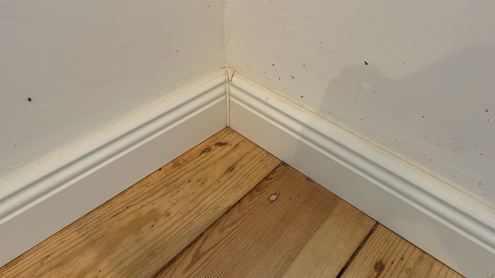

Datum: 22.06.2025
Die Mängel wurden am 20.06. vor dem Einzug in die Wohnung aufgenommen. Ein zweiter Teil wurde nach dem Einzug protokolliert, jedoch schon vorher bemerkt. Das Auftauchen dieser Mängel durch den Umzug, ist daher ausgeschlossen. Unterhalb des Bildes findet sich die Beschreibung des Problems, sowie das erwartete Ergebnis.
Die Arbeit an den Böden wurde auf Anfrage der Eigentümer gestoppt. In Schlafzimmer und Arbeitszimmer galten die Arbeiten als abgeschlossen, jedoch ist der Schliff hier weiterhin sehr rau und es zeigen sich Farbrückstände der vorherigen Schichten. Im Flur sind die Böden ebenfalls rau geschliffen, allerdings ohne Lackierung, da diese zum Afutragsstopp nicht abgeschlossen war. Das Wohnzimmer wurde noch nicht bearbeitet.
Problem: Das Licht im Flur flackert manchmal nach dem Anschalten. Es bleibt dann am Flackern und schaltet sich nicht richtig an.
Erwartung: Das Licht flakert beim Anschalten nicht mehr.
Problem: Flecken an der Wand im Arbeitszimmer. Vermutlich von der Beize.
Erwartung: Keine Flecken an der Wand. Gern Farbe für die Eigentümer da lassen.

Problem: Flecken an der Wand.
Erwartung: Übermalen der Flecken.

Problem: Flecken an der Wand.
Erwartung: Übermalen der Flecken.

Problem: Farbe bröckelt bereits ab.
Erwartung: Behebung der abbröckelnden Stellen.
Im folgenden weitere Flecken und nötige Nachbesserungen im Flur.


Problem: Der im Bild gezeigte Wandteil in der Küche ist nicht sauber gestrichen.
Erwartung: Eine Ebene Fläche, auf der die Farbe sauber auf die Wand aufgetragen ist.

Problem: Wandteil in der Ecke ist nicht sauber gestrichen. Es komme dunkle Flecken zum vorschein.
Erwartung: Keine dunklen Flecken in der Ecke.

Problem: Unsaubere Stellen an der Fußleiste.
Erwartung: Dunkle Flecken in der Fußleiste sind entfernt. Relativ gleichmäißge Farbverteilung.

Problem: Unsauber verputzt hinter den Rohren und am Heizkörper. Die Wand ist hier sehr uneben.
Erwartung: Sauber verputzter Bereich um den Heizkörper und die Rohre.

Problem: Fußleiste ist nicht vollständig gestrichen.
Erwartung: Fußleiste ist vollständig gestrichen. Allerdings steht hier bereits die Küche vor der Fußleiste, da wir am 20.06. in die Wohnung ziehen mussten.
Problem: Unsaubere Stellen unterhalb der Fliesen. Die Wand scheint ist hier sehr rau.
Erwartung: Saubere Wandstellen, an denen der Putz oder die Farbschichten gleichmäßig aufgetragen ist. Dieser Bereich ist bereits durch den Einzug durch eine Küchenzeile verdeckt.
Problem: Die Steckdosen funktionieren nicht. Sie wurden mehrfach durch die Wohnungseigentümer vertestet.
Erwartung: Funktionierende Steckdosen. Die Behebung erfolgte durch den Eigentümer, eine Steckdose war nicht richtig angeklemmt.

Problem: Teile der alten Tapete finden sich noch unter den Heizkörpern. Eine Entfernung der alten Tapeten hinter den Heizkörpern wurde nicht vereinbart. Hier zeigt sich die Tapete jedoch noch unterhalb der Heizung.
Erwartung: Tapete soll von außen nicht mehr zu sehen sein.

Problem: Unsaubere stellen an der Wand.
Erwartung: Die Stellen sind gleichmäßig und sauber gearbeitet. An der Wand zeigt sich kein offener Putz. Die Farbschcihten sind zudem relativ gleichmäßig verteilt.

Problem: Nicht bemalte Wandflächen hinter den Rohren.
Erwartung: Gleichmäßig aufgetragene Farbschichten.

Problem: Unsauber berabeiteter Boden mit Farbrückständen aus den vorherigen Schichten.
Erwartung: Sauber bearbeitete Diele in denen vorherigen Farbschichten nicht mehr sichtbar sind.

Problem: Unsauber berabeiteter Boden mit Farbrückständen aus den vorherigen Schichten.
Erwartung: Sauber bearbeitete Diele in denen vorherigen Farbschichten nicht mehr sichtbar sind.

Problem: Unsauber berabeiteter Boden mit Farbrückständen aus den vorherigen Schichten.
Erwartung: Sauber bearbeitete Diele in denen vorherigen Farbschichten nicht mehr sichtbar sind.

Problem: Nicht gleichmäßig aufgetragene Farbschichten.
Erwartung: Farbschichten sind gleichmäßig verteilt.

Problem: Offene Stellen in den Wänden.
Erwartung: Offene Stellen sind ordentlich verschlossen.

Problem: Dunkle Stellen in den Ecken.
Erwartung: In den Ecken finden sich keine dunklen Stellen, die Farbschichten sind hier sauber verteilt.

Problem: Unsauber aufgetragene Farbe und Putz neben den Rohren.
Erwartung: Saubere Bearbeitung der Bereiche um die Rohre mit Putz und Farbe.

Problem: Putz an der Ecke und Übergang zu den Leisten scheint unsauber.
Erwartung: Sauberer Übergang zu Wand und Leiste, sowie Ecke und Fußleiste.

Problem: Unsaubere Putzstellen hinter und um den Rohren.
Erwartung: Saubere Bearbeitung der Stellen hinter und um den Rohren. Der Rohrbereich ist generell schwerer zu bearbeiten. In unserer Mietwohnung waren die Stellen jedoch deutlich sauberer.
Problem: kleinere Flecken hinter der Tür.
Erwartung: Ausbesserung der Flecken.

Problem: Unsauber verputzte Ecke.
Erwartung: Gleichmäßiger Farbauftrag, sowie sauber verputzte Ecke.

Problem: Farbe nicht vollständig aufgetragen an der Heizung.
Erwartung: Kein durchschimmern von nicht gewollter Farbe.

Problem: Farbe nicht vollständig aufgetragen neben der Heizung.
Erwartung: Vollständig aufgetragene Farbe.

Problem: Farbe nicht vollständig aufgetragen.
Erwartung: Stelle an der Wand ist vollständig mit weißer Farbe bedeckt.

Problem: Unsauber verputzte Ecke.
Erwartung: Gleichmäßiger Farbauftrag, sowie sauber verputzte Ecke.

Problem: Ungleichmäßiger Farbstrich.
Erwartung: Farbstrich ist ähnlich an Stellen wo möglich.

Problem: Unvollständiger Anstrich im Rohrbereich.
Erwartung: Stelle an der Wand ist vollständig mit weißer Farbe bedeckt.

Problem: Unvollständig verputzte Ecke.
Erwartung: Ecke schließt ist sauber verputzt und zeigt keine unsauberen Stellen.

Problem: Eckbereich ist nicht sauber bearabeitet. Farbauftrag sehr grob.
Erwartung: Gleichmäßiger Farbauftrag.

Problem: Bereiche hinter den Rohren sind nicht sauber bearbeitet, teilweise fehlt Farbe.
Erwartung: Vollständiger Farbauftrag an den offenen Stellen.

Problem: Farbe findet sich in der Toilette. Die Toiellete ist hier schwer zu reinigen. Mit der Toilettenbürste konnte ich die Farbe bis jetzt nicht entfernen.
Erwartung: Die Toilette findet sich so vor, wie wir sie vor den Arbeiten verlassen haben.

Problem: Rückstände von Beize auf der Türschwelle. Das Malerfließ klebt an dieser Stelle, daher vermuten wir, dass es sich hierbei um Beize handelt. Wir haben Angst, dass hier weiterhin das Holz angegriffen wird.
Erwartung: Beize ist an entsprechender Stelle entfernt.

Problem: Offene Stelle an der Diele.
Erwartung: Füllung für die Stelle oder Übergang zur Türschwelle.

Problem: Hier wurde nach Absprache ein Übergang zur Türschwelle des Balkon vereinbart. Dieser fehlt aktuell.
Erwartung: Übergang zum Balkon, ordentliche Schwelle.

Problem: Flecken an der Wand im Arbeitszimmer. Vermutlich von der Beize.
Erwartung: Keine Flecken an der Wand. Gern Farbe für die Eigentümer da lassen.